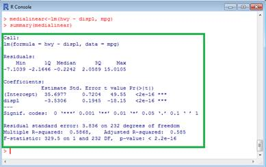

O Python foi lançado no início da década de 90 pelo programador e matemático holandês Guido Van Rossum. A linguagem foi projetada para dar ênfase no trabalho do desenvolvedor, facilitando a escrita de um código limpo, simples e legível, tanto em aplicações menores quanto em programas mais complexos.
A linguagem oferece recursos como tipagem dinâmica e forte (tipo de dado do valor deve ser do mesmo tipo da variável), orientação a objetos, multiparadigmas (programação funcional e imperativa), além de recursos poderosos em biblioteca padrão e via módulos e frameworks desenvolvidos pela comunidade. Seu código é aberto e a utilização é gratuita, rodando em praticamente qualquer sistema.
JAVA
O Java é uma linguagem de programação e plataforma computacional lançada pela primeira vez pela Sun Microsystems em 1995. Existem muitas aplicações e sites que não funcionarão, a menos que você tenha o Java instalado, e mais desses são criados todos os dias. O Java é rápido, seguro e confiável. De laptops a datacenters, consoles de games a supercomputadores científicos, telefones celulares à Internet, o Java está em todos os lugares!
C#
O C# é uma linguagem de programação multiparadigma criada pela Microsoft, sendo a principal da plataforma .NET. Por ser uma linguagem que suporta, entre outros paradigmas, a orientação à objetos, ela suporta conceitos comuns como encapsulamento, herança e polimorfismo. Trata-se também de uma linguagem fortemente tipada e case-sensitive, ou seja, faz diferenciação entre letras minúsculas e maiúsculas.
O C# veio para facilitar o processo de desenvolvimento, tendo inúmeros recursos que proporcionam uma grande produtividade para os desenvolvedores que a utilizam.
R

É uma linguagem e ambiente para computação estatística e gráficos. É um projeto GNU que é semelhante ao idioma e ao ambiente S desenvolvido na Bell Laboratories (anteriormente AT&T, agora Lucent Technologies) por John Chambers e colegas.